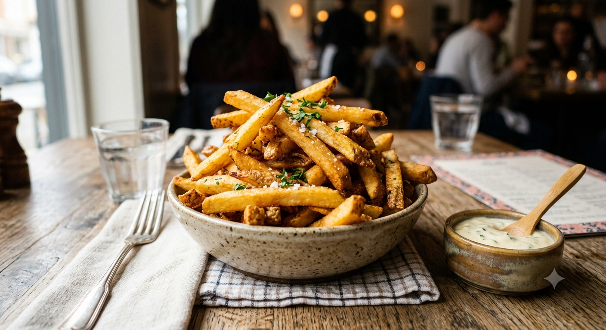

Papas Fritas

Las papas fritas son uno de los acompañamientos más populares y
queridos en todo el mundo. Esta receta te enseñará a prepararlas al
estilo tradicional, logrando que queden perfectamente doradas y
crujientes por fuera, pero suaves y tiernas por dentro.
Es el complemento ideal para hamburguesas, carnes o simplemente para
disfrutar solas con tu salsa favorita en una tarde con amigos.
Ingredientes
- Papas grandes (la cantidad que te vayas a comer)
- Abundante aceite vegetal
- Sal algusto
Pasos a seguir
- Lavar y pelar: Lava bien las papas y pélalas. Si
lo prefieres, puedes dejarles la piel para un estilo más rústico.
- Cortar: Corta las papas en bastones uniformes
de aproximadamente 1 cm de grosor para que se cocinen al mismo ti
empo.
- Remojar: Pon los bastones de papa en un tazón co
n agua fría durante 30 minutos para eliminar el exceso de almidón
. Esto ayudará a que queden más crujientes. Después, escúrrelas
y sécalas muy bien con un paño limpio.
- Primera fritura (confitado): Calienta el aceite a
una temperatura media (unos 140°C) y fríe las papas durante unos
5-7 minutos hasta que estén tiernas pero no doradas. Retíralas y
escúrrelas.
- Segunda fritura (dorado): Sube el fuego para qu
e el aceite esté bien caliente (unos 180°C). Vuelve a introducir l
as papas y fríelas por 2 o 3 minutos más, hasta que estén bien do
radas y crujientes.
- Servir: Retíralas del aceite, escúrrelas
sobre papel absorbente, añade sal al gusto inmediatamente y sírve
las calientes.
Otras recetas